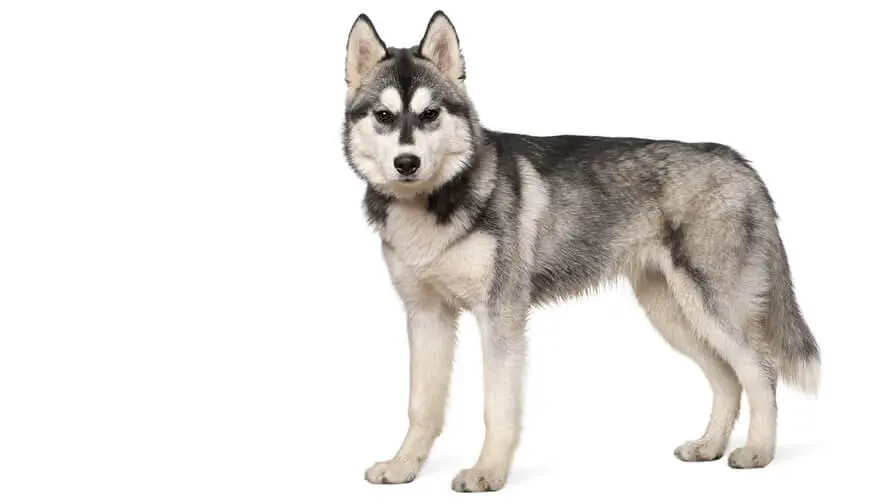
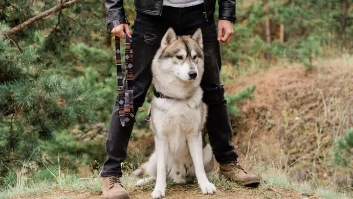

El Husky es un perro de tamaño mediano cuyas proporciones insinúan un equilibrio perfecto entre potencia, velocidad y resistencia. Con su pelaje de doble manto y longitud media, sus orejas erguidas y su cola tipo cepillo, esta raza puede presentar colores y manchas muy diversas, incluyendo el blanco, con algunos ejemplares de colorido notable. Los machos adultos miden entre 53 y 60 cm y las hembras, entre 51 y 56 cm. Los machos pesan de 20 a 27 kg y las hembras, de 16 a 23 kg. El Husky siberiano tiene orejas erguidas y ojos de color café a azul o quizás hasta uno de cada color. El cuello es erguido y está a nivel. La cola está cubierta de piel y llevada en lo alto o algunas veces directamente atrás. El Husky siberiano tiene una manto muy denso, afelpado y con una primera capa abundante. Alrededor del cuello encontramos un pequeño collar de piel pero no tiene flecos ni en las piernas o cola. Los colores varían del negro al blanco y toda la gama que pudiera haber entre estos colores. La mayoría de los perro tienen marcas blancas, particularmente en el pecho y piernas.
Personalidad
Esta raza es muy conocida por su buen carácter y por ser muy cariñosa con la gente, por lo que no son perros guardianes por naturaleza. Les encanta y necesitan estar acompañados y no deberán quedarse solos durante mucho tiempo, ya que pueden volverse muy destructivos. Les gusta estar con otros perros bien adiestrados, aunque son cazadores ágiles y eficientes, por lo que deberán adiestrarse con cuidado para que puedan estar en contacto con otros animales domésticos. Aunque no suelen ladrar, sí que aúllan, a veces solo por el simple placer de hacerlo. Son inteligentes pero de alguna manera independientes y tercos. Dependen de la compañía humana, pero necesitan firmeza, un entrenamiento amable y correcto desde que es cachorro. Estos son perros criados para correr, y el amor que tienen por correr sobrepasa el amor por sus custodios en momentos. El Husky siberiano tiende a ser amigable con la gente incluyendo a los niños. La mayoría de los Husky Siberianos son buenos con otros perros, especialmente con los que han crecido con ellos. Tienen un alto impulso por las presas y pueden atrapar gatos y otros animales. El Husky siberiano puede ser gran excavador, particularmente en climas cálidos, porque les gusta crear lugares frescos para recostarse. No son ladradores como regla pero si aúllan.
